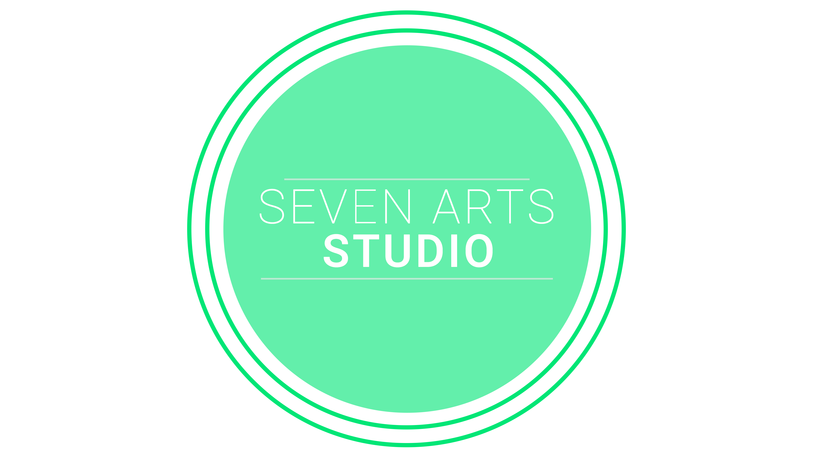

There's no faster way to learn to build responsive sites and apps with Foundation. You'll learn how to get started, Foundation's XY grid, time saving UI components and best practices, as well as using and customizing Foundation's JavaScript helpers.

Studio
Take your skills to the next level and impress your co-workers with Advanced Foundation. You'll come away with advanced XY Grid skills, how to amplify your skills using Sass, ZURB's build system to automate tasks, and advanced JavaScript customizations.
Tech
Foundation certification shows that you understand responsive design and validates your coding skills with this public accreditation. Foundation Certification will help you become more marketable, get hired faster, and promote yourself.
Photography
There's no faster way to learn to build responsive sites and apps with Foundation. You'll learn how to get started, Foundation's XY grid, time saving UI components and best practices, as well as using and customizing Foundation's JavaScript helpers.
Create
Take your skills to the next level and impress your co-workers with Advanced Foundation. You'll come away with advanced XY Grid skills, how to amplify your skills using Sass, ZURB's build system to automate tasks, and advanced JavaScript customizations.
Music
Foundation certification shows that you understand responsive design and validates your coding skills with this public accreditation. Foundation Certification will help you become more marketable, get hired faster, and promote yourself.
E-Books
There's no faster way to learn to build responsive sites and apps with Foundation. You'll learn how to get started, Foundation's XY grid, time saving UI components and best practices, as well as using and customizing Foundation's JavaScript helpers.